Automorphismengruppe der endlichen zyklischen Untergruppe
1. Satz
Sei  eine Gruppe und
eine Gruppe und  mit Ordnung 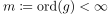
Dann gilt für die Automorphismengruppe :
mit Ordnung 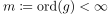
Dann gilt für die Automorphismengruppe :
1
2. Beweis
Sei 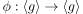 ein Gruppenautomorphismus. Dann gilt:
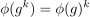
2
also ist  eindeutig durch 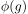 festgelegt
Sei 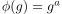 mit
eindeutig durch 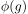 festgelegt
Sei 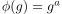 mit  Da surjektiv ist, folgt
Da surjektiv ist, folgt  , da sonst für
, da sonst für  gilt:
gilt:
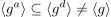
3
Definiere im folgenden die Abbildung:
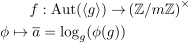
4
Nach der Vorbemerkung ist $φ
Dann ist die evidente Umkehrabbildung
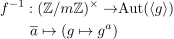
5
Es gilt: 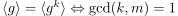
TODO fingerübung: wohldefiniertheit